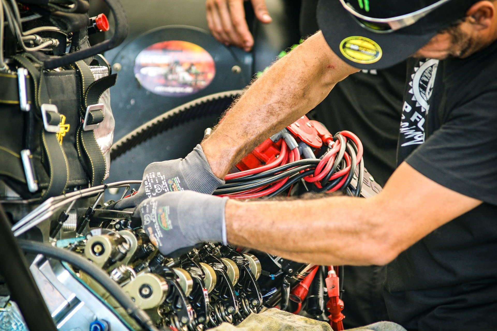

Herzlich Willkommen auf unserer Website
Hier stellen wir euch einige Berufsfelder vor, die für Schüler*innen nützlich sein könnten

Wir die 8.1 möchten ihnen diese website vorstellen damit sie sehen welcher
job für sie passend ist. Hier siehst du welche vor und nachteile dein traumberuf
hat. Oder welchen abschluss du für diesen beruf brauchst. Wir hoffen das diese Website
ihnen helfen wird. Wir haben uns bemüht diese website zu bearbeiten.
Wir hoffen Sie wissen dies zu schätzen.